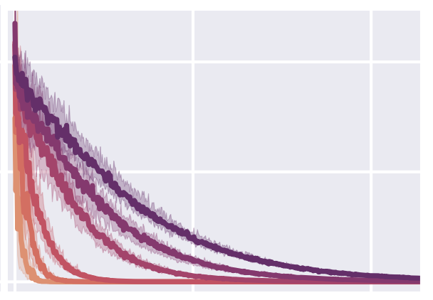

I am currently a postdoc researcher at ENS Paris, Center for Sciences of Data supervised by Kimia Nadjahi and Claire Boyer.
I did my thesis at the Institut de Mathématiques de Bordeaux (IMB) under the supervision of Jérémie Bigot and Bernard Bercu. The manuscript is available here.
Statistical applications of multivariate quantiles, in domains like conformal prediction or risk analysis
Resolution of (optimal) transport problems, to match a source and a target probability distribution
Convergence analysis of stochastic algorithms in both Euclidean and non-Euclidean settings
The following list of publications is also available on my scholar account. Download links for PDF and codes are available below.